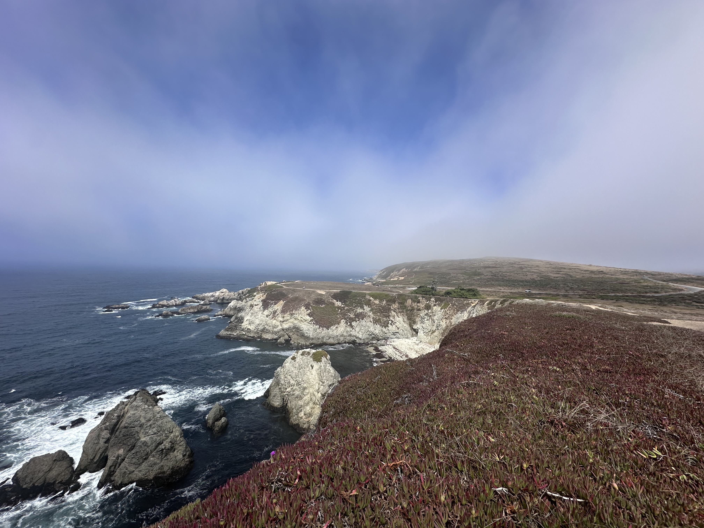

Publications
-
7. Noguchi, Y., Maruoka, M., & Suzuki, J. (2024). Protocol for in vivo CRISPR screening targeting murine testicular cells. STAR Protocols, 5(3), 103306.
-
6. Niu, H., Maruoka, M., Noguchi, Y., Kosako, H., & Suzuki, J. (2024). Phospholipid scrambling induced by an ion channel/metabolite transporter complex. Nature Communications, 15.
-
5. Noguchi, Y., Matsui, R., Suh, J., Dou, Y., & Suzuki, J. (2024). Genome-Wide Screening Approaches for Biochemical Reactions Independent of Cell Growth. Annual Review of Genomics and Human Genetics, 25(1):51-76.
-
4. Noguchi, Y., Onodera, Y., Miyamoto, T., Maruoka, M., Kosako, H., & Suzuki, J. (2024). In vivo CRISPR screening directly targeting testicular cells. Cell Genomics, 4.
-
3. Matsui, Y., Mineharu, Y., Noguchi, Y., Hattori, E.Y., Kubota, H., Hirata, M., Miyamoto, S., Sugiyama, H., Arakawa, Y., & Kamikubo, Y. (2022). Chlorambucil-conjugated PI-polyamides (Chb-M'), a transcription inhibitor of RUNX family, has an anti-tumor activity against SHH-type medulloblastoma with p53 mutation. Biochemical and Biophysical Research Communications, 620, 150-157.
-
2. Daifu, T., Mikami, M., Hiramatsu, H., Iwai, A., Umeda, K., Noura, M., Kubota, H., Masuda, T., Furuichi, K., Takasaki, S., Noguchi, Y., Morita, K., Bando, T., Hirata, M., Kataoka, T.R., Nakahata, T., Kuwahara, Y., Iehara, T., Hosoi, H., Takita, J., Sugiyama, H., Adachi, S., & Kamikubo, Y. (2020). Suppression of malignant rhabdoid tumors through Chb-M′-mediated RUNX1 inhibition. Pediatric Blood & Cancer, 68.
-
1. Matsuo, H., Yoshida, K., Fukumura, K., Nakatani, K., Noguchi, Y., Takasaki, S., Noura, M., Shiozawa, Y., Shiraishi, Y., Chiba, K., Tanaka, H., Okada, A., Nannya, Y., Takeda, J., Ueno, H., Shiba, N., Yamato, G., Handa, H., Ono, Y., Hiramoto, N., Ishikawa, T., Usuki, K., Ishiyama, K., Miyawaki, S., Itonaga, H., Miyazaki, Y., Kawamura, M., Yamaguchi, H., Kiyokawa, N., Tomizawa, D., Taga, T., Tawa, A., Hayashi, Y., Mano, H., Miyano, S., Kamikubo, Y., Ogawa, S., & Adachi, S. (2018). Recurrent CCND3 mutations in MLL-rearranged acute myeloid leukemia. Blood Advances, 2(21), 2879-2889.